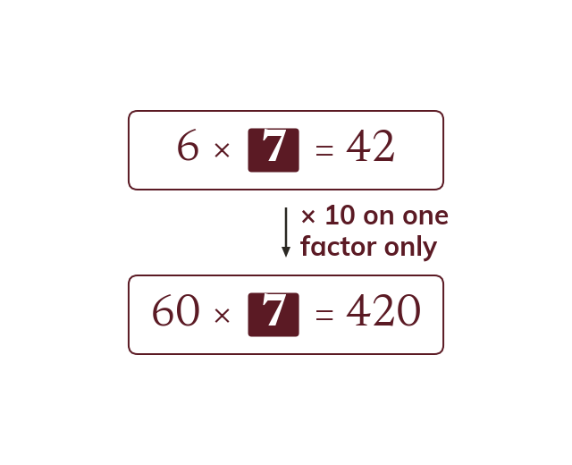
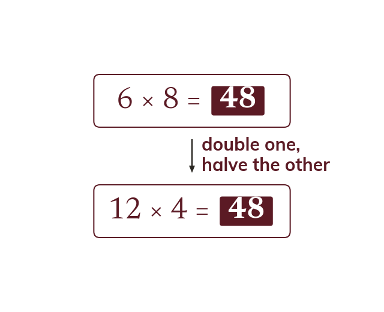
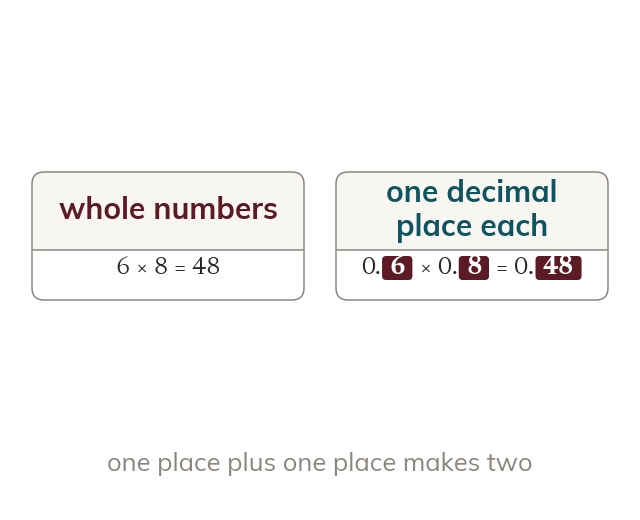
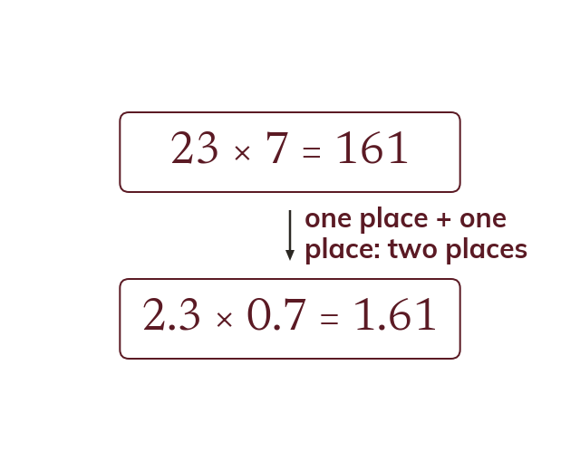

Topic 8.1 · Prime Factors and Calculation Skills · Lesson 3 of 5
Using Known Calculations
Once you know one multiplication fact, you already know a whole family of related facts hiding inside it - scaled up, scaled down, flipped into a division, or shifted into decimals. Today you'll learn to read those facts straight off a known calculation instead of working them out from scratch.
By the end you’ll know…
A known calculation generates a family of related facts without any recalculation.
Scaling one number by a power of ten scales the answer by that same power.
Scaling one number up and the other down by the same factor leaves the product unchanged.
Multiplication and division are inverses, so 24 × 15 = 360 also gives 360 ÷ 15 = 24 and 360 ÷ 24 = 15.
A decimal calculation is the whole-number one rescaled, so 2.4 × 1.5 = 3.6 follows from 24 × 15 = 360.
By the end you can
G4Derive related multiplication and division facts from a given calculation.
G5Use a given calculation to answer problems involving decimals, without recalculating.
Work down the page at your own pace. Write every answer in your book first, then click to check it.
01
Do Now
About 5 minutes
1
Given that 6 × 8 = 48, use this fact to find 6 × 0.8 and 0.6 × 0.8.
6 × 0.8 = 4.8 (scale by 1 tenth) 0.6 × 0.8 = 0.48 (scale by 1 hundredth of the original fact)
2
Given that 72 ÷ 9 = 8, use this fact to find 7.2 ÷ 9.
0.8 (scale both the dividend and the answer by 1 tenth).
3
Without a calculator, work out 456 ÷ 8.
57.
4
Without a calculator, work out 34 × 27 using a written method.
918.
Remember these?
LAST LESSONIs 2² × 3² a square number? How do you know?
Yes — every power is even; it is 36 = 6².
LAST WEEKConvert 2.5 litres into cm³.
1 litre = 1000 cm³, so 2500 cm³.
LAST TERMRound 3.276 to 2 decimal places.
3.28 — the next digit (6) rounds the 7 up.
LAST YEARIf a = 4, evaluate 3a + 2.
3 × 4 + 2 = 14.
02
Learn
Read each card, then follow the worked examples one step at a time.

Scaling one factor
Scaling one factor by 10 scales the answer by 10. The other factor stays the same. e.g. 6 × 7 = 42, so 60 × 7 = 420.
If you scale one number in a multiplication by a power of ten, the answer scales by that same power of ten - the other number hasn't changed, so only that one factor's contribution changes.

Scaling one up, one down
Multiply one factor and divide the other by the same number. The product stays the same. e.g. 6 × 8 = 12 × 4 = 48.
If you scale one factor up by some number and the other factor down by the same number, the product stays exactly the same - what one factor gains in size, the other loses, and they cancel out.
Inverses
Multiplication and division are inverse operations. If A × B = C, then C ÷ B = A. Also C ÷ A = B.
Multiplication and division are inverse operations. If A × B = C, then C ÷ B = A and C ÷ A = B are automatically true too - they're the same relationship, just read in a different direction, and neither needs recalculating.
RELATED FACTS
Given 24 × 15 = 360, find three related facts without recalculating.
Scale 24 up by 10240 × 15 = 3600 (only 24 has been scaled up by 10, so the answer scales by 10 too)
Halve 24 and double 1512 × 30 = 360 (one up, one down by the same factor, so the product is unchanged)
Divide by 15360 ÷ 15 = 24 (inverses: dividing 360 by either factor gives the other back)
Divide by 24360 ÷ 24 = 15
YOUR TURN · a
Given 12 × 5 = 60, write down 120 × 5 and one division fact.
120 × 5 = 600, because only the 12 was scaled by 10; and 60 ÷ 5 = 12.
YOUR TURN · b
Given 16 × 25 = 400, find: 160 × 25, then 8 × 50, then two division facts. (Hint: which factor is being scaled by 10 in the first one? For the second, what happens to 16 and 25 to keep the product unchanged?)
160×25=4000; 8×50=400; 400 ÷ 25=16 and 400 ÷ 16=25.
03
Check your understanding
Pick an answer. If it's wrong, the feedback tells you which mistake it was.
Given 7 × 8 = 56, what is 70 × 8?
Not quite.70 is 10 times 7, so the answer is 10 times 56.
Yes.70 is 10 × 7, so 70 × 8 = 10 × 56 = 560.
Not quite. Only one number got 10 times bigger, so × 10, not × 100.
Not quite. Multiply the answer by 10. Don't add.
Given 6 × 20 = 120, what is 12 × 10?
Not quite.20 was also halved to 10, so the doubling is undone.
Yes.6 doubled and 20 halved, so the product stays 120.
Not quite.6 was also doubled to 12, which cancels out the halving.
Not quite. Double one and halve the other, and the product doesn't change.
Given 9 × 12 = 108, which of these is also true?
Not quite. Both division facts come from the same multiplication.
Not quite.108 ÷ 9 = 12 is true as well.
Yes. Multiplying and dividing undo each other, so both facts follow.
Not quite. Division undoes multiplication, so both facts follow straight away.
04
Practise
mark as you go
Checkpoint. Given 18 × 12 = 216, find: 180 × 12; a one-up-one-down variation of your choice that keeps the product 216; and both division facts. Show your working - I'll check it before you move on.Show your teacher before you go on
1
Given 23 × 14 = 322, find 230 × 14.
23 is scaled by 10, so the answer is too 3220
2
Given 23 × 14 = 322, find 2300 × 14.
23 is scaled by 100 32200
3
Given 23 × 14 = 322, find 46 × 7.
23 is doubled and 14 is halved The product stays 322
4
Given 23 × 14 = 322, write down both division facts.
322 ÷ 14 = 23 322 ÷ 23 = 14
5
Given 23 × 14 = 322, find 3220 ÷ 23.
3220 is 322 × 10, so the answer is 14 × 10 140
EXT
Given 23 × 14 = 322, find 69 × 14.
69 = 3 × 23, so the answer is 3 × 322 966
05
Learn
Read each card, then follow the worked examples one step at a time.

Rescaling to decimals
A decimal calculation is the whole-number calculation rescaled. The answer has as many decimal places as the question has in total.
A decimal calculation is just the whole-number calculation rescaled - the total number of decimal places across the question matches the total number of decimal places shifted into the answer.

Using the known fact directly
Use the known whole-number fact as the working. Only the decimal point needs tracking.
Once you have a known whole-number calculation, using it to answer a decimal version IS the working - there's no need to recalculate from scratch, only to track how the decimal point moves.
MULTIPLYING DECIMALS
Given 24 × 15 = 360, find 2.4 × 1.5 without recalculating.
Count the places1 + 1 = 2 (2.4 has 1 and 1.5 has 1)
Shift 2 places2.4 × 1.5 = 3.60
Drop the zero= 3.6
THE INVERSE
Now find 3.6 ÷ 1.5 the same way.
this is the inverse of 2.4 × 1.5 = 3.6, so 3.6 ÷ 1.5 = 2.4.
YOUR TURN · c
Given 12 × 4 = 48, find 1.2 × 0.4 without recalculating.
two decimal places altogether, so the answer shifts two places: 1.2 × 0.4 = 0.48.
YOUR TURN · d
Given 45 × 12 = 540, find 4.5 × 1.2 without recalculating, then use it to state 5.4 ÷ 1.2. (Hint: how many decimal places are in 4.5 and 1.2 together?)
4.5×1.2=5.40=5.4; 5.4 ÷ 1.2=4.5.
06
Check your understanding
Pick an answer. If it's wrong, the feedback tells you which mistake it was.
Given 24 × 15 = 360, what is 2.4 × 15?
Yes.2.4 is 24 ÷ 10, so 360 ÷ 10 = 36.
Not quite.2.4 is 10 times smaller than 24, so the answer is too.
Not quite. Only one number got 10 times smaller, so ÷ 10, not ÷ 100.
Not quite. Divide the answer by 10. Don't subtract.
Given 32 × 25 = 800, a student is asked to find 3.2 × 2.5. What is the most efficient way to answer?
Not quite. No need to start again. Adjust 800 using the decimals.
Yes. Each number is 10 times smaller, so 800 ÷ 100 = 8.
Not quite. The known fact gives the exact answer, so there's no need to estimate.
Not quite. The fact 32 × 25 = 800 gives it: 800 ÷ 100 = 8.
Given 8 × 35 = 280, what is 0.8 × 35?
Not quite.0.8 is 10 times smaller than 8, so the answer is too.
Yes.0.8 is 8 ÷ 10, so 280 ÷ 10 = 28.
Not quite. Only one number got 10 times smaller: ÷ 10, not ÷ 100.
Not quite.0.8 is smaller than 8, so the answer gets smaller, not bigger.
07
Practise
mark as you go
Checkpoint. Given 32 × 25 = 800, find 3.2 × 2.5 and 0.32 × 25 without recalculating. Show your reasoning for how many decimal places shift each time - I'll check it before you move on.Show your teacher before you go on
1
Given 36 × 18 = 648, find 3.6 × 1.8
1 + 1 = 2 decimal places = 6.48
2
Given 36 × 18 = 648, find 0.36 × 18
2 decimal places = 6.48
3
Given 36 × 18 = 648, find 3.6 × 0.18
1 + 2 = 3 decimal places = 0.648
4
Given 36 × 18 = 648, find 64.8 ÷ 1.8
64.8 ÷ 1.8 = 648 ÷ 18 = 36
5
Given 36 × 18 = 648, find 6.48 ÷ 0.36
6.48 ÷ 0.36 = 648 ÷ 36 = 18
EXT
Given 36 × 18 = 648, find 7.2 × 0.9
72 × 9 = 36 × 18 = 648 (double and halve) So 7.2 × 0.9 = 6.48
08
Exit ticket
On paper, on your own, then check
1
Explain why knowing 12 × 40 = 480 also tells you that 480 ÷ 40 = 12, without doing the division.
Multiplication and division are inverse operations, so if 12 × 40 = 480 then dividing 480 by either factor must return the other factor exactly.
2
Given 8 × 35 = 280, find 80 × 35 and 4 × 70 without recalculating.
80 × 35 = 2800 (one factor ×10, so the product ×10) 4 × 70 = 280 (8 halved to 4, 35 doubled to 70, so the product is unchanged)
3
Given 8 × 35 = 280, find 0.8 × 3.5 without recalculating.
0.8 × 3.5 = 2.8 (2 decimal places altogether shifted in from 280).
Finished? Next lesson: 8.1.4 Calculator Skills.
Practise more
After the lesson, or whenever you want more
Dr Frost
Log in, then search for a code to practise that skill.
128aWork out a related multiplication using a given multiplication fact, where one number is scaled.
176aWork out a related multiplication using a given multiplication fact, where both numbers are scaled.
123aCalculate a decimal multiplication using a given multiplication fact and knowledge of place value.